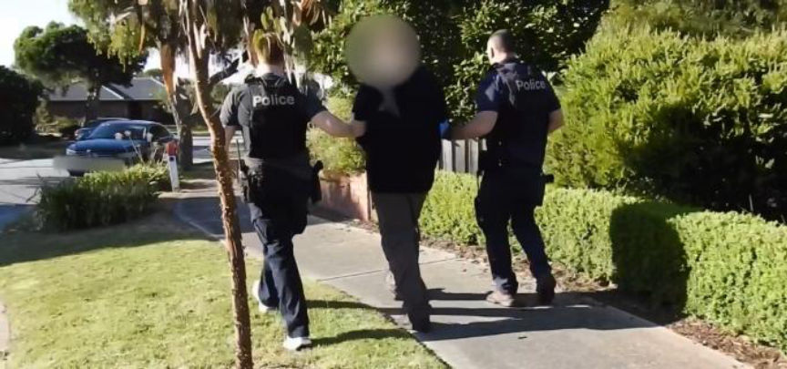
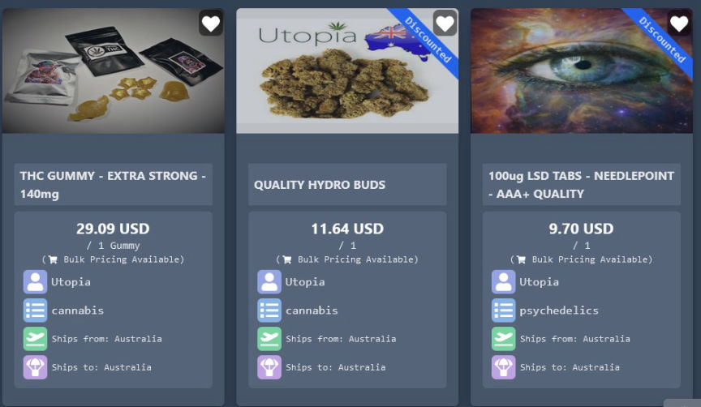
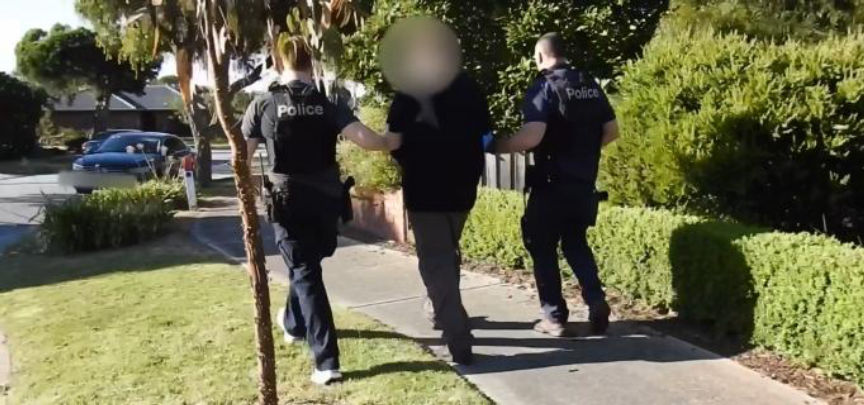
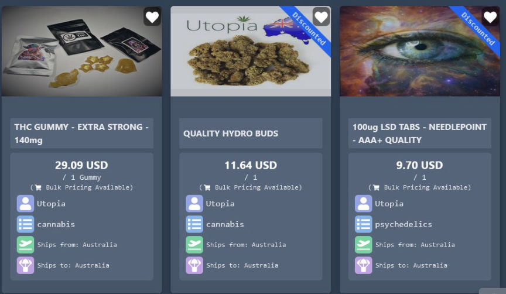

Australian Vendor "Utopia" Busted
Police in Australia arrested and charged a duo accused of conspiring in the distribution of large quantities of drugs through the dark web.

According to a press release by the Victoria police, 42-year-old Lucas Raymond Bingham and his accomplice, a 39-year-old woman, distributed large quantities of LSD and Cannabis through the Utopia vendor profile on multiple dark web marketplaces.
The duo's arrest resulted from investigations launched in June 2023. The investigators allegedly intercepted over 150 drug packages mailed by the duo via post boxes in different locations.
The investigators arrested the two suspects after executing search warrants at their residences on October 18.
They seized two firearms, LSD tablets, cannabis, THC gummies, cannabis resin, THC cookies, cannabis oil, approximately $5,000 in cash, and an Isuzu D Max from Bingham’s house.
At the woman's home, the investigators seized LSD tablets, MDMA, cannabis resin, and THC cookies. They also recovered an undisclosed amount of cash and the seed phrases for two cryptocurrency wallets.
The woman was charged with possessing cannabis, MDMA, LSD, THC, and proceeds of crime. She was released on bail and will appear at Dandenong Magistrates’ Court on June 11.
Bingham was charged with trafficking a large commercial quantity of LSD, trafficking a commercial quantity of THC, trafficking cannabis, and possession of LSD, THC, cannabis, and proceeds of crime.
Bingham was presented before Melbourne Magistrates’ Court on October 19 for his bail hearing. During the hearing, the police told the court that Bingham admitted he operated the Utopia vendor accounts. They also said he gave them access to the accounts.

He was released on a $500,000 surety and ordered to report to the police three times a week, surrender his passports, not access the dark web and possess one phone only.
A third suspect, a 67-year-old man, was also questioned and released without charge.

According to a press release by the Victoria police, 42-year-old Lucas Raymond Bingham and his accomplice, a 39-year-old woman, distributed large quantities of LSD and Cannabis through the Utopia vendor profile on multiple dark web marketplaces.
The duo's arrest resulted from investigations launched in June 2023. The investigators allegedly intercepted over 150 drug packages mailed by the duo via post boxes in different locations.
The investigators arrested the two suspects after executing search warrants at their residences on October 18.
They seized two firearms, LSD tablets, cannabis, THC gummies, cannabis resin, THC cookies, cannabis oil, approximately $5,000 in cash, and an Isuzu D Max from Bingham’s house.
At the woman's home, the investigators seized LSD tablets, MDMA, cannabis resin, and THC cookies. They also recovered an undisclosed amount of cash and the seed phrases for two cryptocurrency wallets.
The woman was charged with possessing cannabis, MDMA, LSD, THC, and proceeds of crime. She was released on bail and will appear at Dandenong Magistrates’ Court on June 11.
Bingham was charged with trafficking a large commercial quantity of LSD, trafficking a commercial quantity of THC, trafficking cannabis, and possession of LSD, THC, cannabis, and proceeds of crime.
Bingham was presented before Melbourne Magistrates’ Court on October 19 for his bail hearing. During the hearing, the police told the court that Bingham admitted he operated the Utopia vendor accounts. They also said he gave them access to the accounts.

Utopia's listings on Incognito. The account was last accessed on October 18
He was released on a $500,000 surety and ordered to report to the police three times a week, surrender his passports, not access the dark web and possess one phone only.
A third suspect, a 67-year-old man, was also questioned and released without charge.